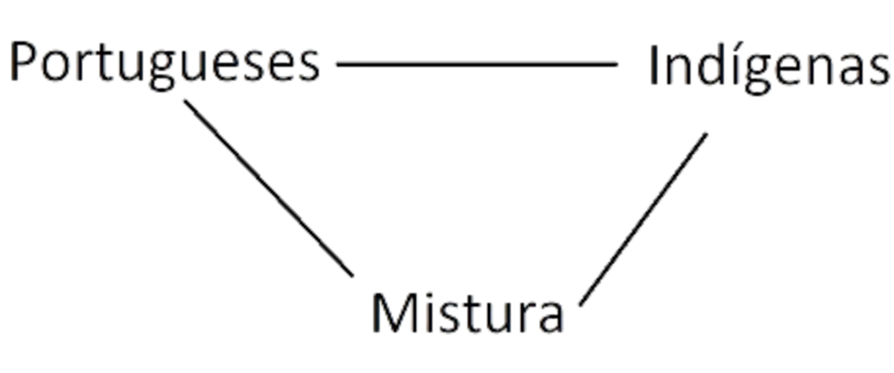
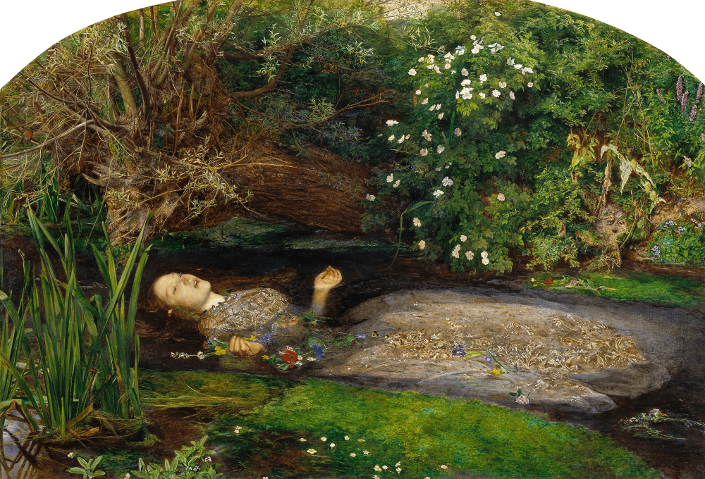

Sua trama é baseada na "Jornada do Heroí" (protagonista começa a história em seu cotidiado > algo acontece > ele tem que mudar > sai em uma jornada > acontece algo grandioso > clímax > final e tudo volta ao normal);
Possuí um começo, meio e fim;
Rico em detalhes;
Personagens principais e secundários;
Texto em prosa.
Exemplos: ?
Romance - Movimento Literário
Um movimento produzido por pessoas dentro de um contexto histórico;
Fase da Independência do Brasil;
Marcado pela falta e busca de uma identidade nacional;
Marcado pelo sentimentalismo e subjetivismo.
Contextualização
O movimento literário do Romantismo se passa em um cenário posterior ao Arcadismo, mas como seu sucessor na busca por uma identidade nacional, uma vez que os artistas arcadistas no período correspondente ao final de seu movimento passaram a questionar como o Brasil era devido a influência europeia e buscar a indepêndencia da colônia.
O que posteriormente levou ao movimento romântico, pautado principalmente na busca por uma identidade nacional brasileira que pudesse representar uma nação independente, o Brasil em si que havia conquistado a sua a poucos anos em 1822, entretanto essa busca levou aos autores do movimento a ponderar quem era o real brasileiro, os portugueses que deixaram suas terras, os povos originários ou a mistura de ambos, e é apartir disso que o movimento começa efetivamete.
Gerações
O Romantismo foi um movimento literário que se extendeu pelos anos de 1836 até 1881, sendo divido nas 3 gerações/fases a baixo:
1ª Geração - Indianismo
Uma geração marcada pelas características a seguir, mas principalmente pela exaltação e idealização dos povos indígenas, uma vez que o debate era sobre quem é o verdadeiro brasileiro e os indígenas eram aqueles que estavam presentes desde de sempre aqui em solo brasileiro.
Sentimentalismo, nesta época existia um grande sentimentalismo nas obras, já que os autores abordavam em suas obras diversos sentimentos, principalmente os seus mesmos;
As obras desse período também buscavam ter uma simplicidade em sua escrita e até mesmo uma informalidade;
Além disso outro aspecto muito presente nas obras era a hipérbole (exagero);
Um período marcado pela indepêndencia do Brasil, visto que o principal tema do movimento era a busca por uma identidade nacional e possuia um grande nacionalismo;
Está busca por uma identidade levou a reflexão sobre quem era o "real" brasileiro, dando assim a origem a tríade de os portugueses que sairam de suas terras por amor a nação eram os verdadeiros brasileiros, os indígenas eram os povos originários então são os reais brasileiros ou o real brasileiro é a mistura de ambos

Todos os fatos citados acima levaram que os autores do Romantismo a idolizar o indígena como heroí nacional;
Culto à natureza e valorização da língua indígena, devido a essa relação com os povos originários;
Dentro desse cenário se destaca principalmente um autor muito importante para o movimento, o José de Alencar responsável por criar o livro Iracema;
O livro "Iracema" foi de extrema importância devido a apresentar todas as características dessa primeira fase, como a idealização da mulher
Iracema, a virgem dos lábios de mel, que tinha os cabelos mais negros que a asa da graúna e mais longos que seu talhe de palmeira. O favo da jati não era doce como seu sorriso; nem a baunilha recendia no bosque como seu hálito perfumado.
Por último temos outro autor importante para o movimento, que produzia diversas poesias com o tema de saudade e exaltação da pátria, o Gonçalves Dias criador do poema "Canção do exílio"
Minha terra tem palmeiras
Onde canta o Sabiá,
As aves, que aqui gorjeiam,
Não gorjeiam como lá.
Nosso céu tem mais estrelas,
Nossas várzeas têm mais flores,
Nossos bosques têm mais vida,
Nossa vida mais amores.
2ª Geração - Mal do Século / Ultrarromântico
A segunda fase deste Movimento Literário, marcada principalmente pela falta de uma identidade nacional ao invés de sua busca, a mesma compartilha seu nome "Mal do Século" com uma das gerações da versão europeia do Romantismo, devido a situação de desanimo e depressão que os artistas se encontravam devido a falta de uma identidade nacional.
Com a falta de uma identidade nacional os autores passaram a perder esse sentimento nacionalista;
Devido a isso eles passaram a idealizar a mulher (inalcançavel e sinônimo de perfeição), o amor e a morte, como uma forma de escapismo, passando a viverem uma identidade em favor de outro (a mulher idealizada) e caso não vivessem por isso prefeririam morrer;

Muitas vezes a maneira como esses temas apareciam em suas obras era muito exagerada(hipérbole);
Outras características foram a intensidade, fuga da realidade, jogo de luz e sombra.
3ª Geração - Geração Condoreira
A última fase do Romantismo, caracterizada principalmente por abordar a situação do Brasil época de forma geral, como uma águia que vê tudo de cima, tanto que diversos autores passam a abordar certos temas não discutidos e apontar problemas indiretamente.
A partir desse momento na história os artistas e autores românticos começam a falar de problemas sociais de uma forma forma sentimentalista. Exemplo: Abordar os sentimentos dos escravos africanos que foram retirados de seu país de origem, como a saúdade e tristeza, mas não criticar de maneira direta;
Eles retomam a busca pela identidade nacional e inserem um novo "personagem" dentro da tríade: os escravizados que foram retirados à força da sua terra natal
Passam a abordar também não só seus sentimentos, mas os sentimentos coletivos;
Como dito na descrição eles começam a fazer críticas implícitas sobre diversos aspectos da situação do país;
Por fim temos Castro Alves, um autor conhecido desta fase por seu poema "O Navio Negreiro":
Negras mulheres, suspendendo às tetas
Magras crianças, cujas bocas pretas
Rega o sangue das mães:
Outras moças, mas nuas e espantadas,
No turbilhão de espectros arrastadas,
Em ânsia e mágoa vãs!